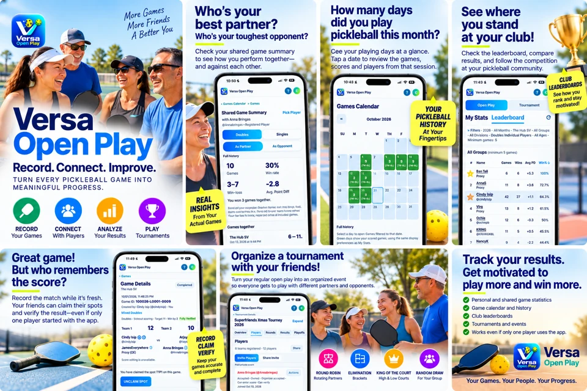
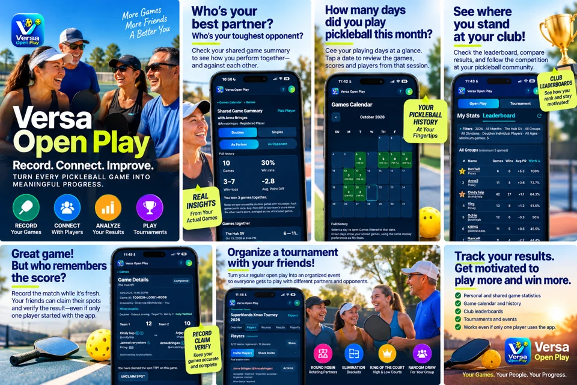

Keep your game history
Record singles or doubles with a club, date, players and final score. Find unfinished games on Home, or revisit a playing day in Games Calendar.
More games. More friends. A better you.
Record the score while it’s fresh. Connect with the people you play with. Turn your regular pickleball games into a history you can learn from.
One player can get things started. Friends can join and claim their games later.
You’re joining the testing app. This is staging, ahead of a production launch. Data may be reset and will not transfer to production. VOP+ is a testing simulation with no payment.
A look inside
Explore the app’s game history, calendar, shared summaries, club rankings and tournament tools in one place.


Built around your court time
Record singles or doubles with a club, date, players and final score. Find unfinished games on Home, or revisit a playing day in Games Calendar.
Use a proxy for a friend without an account. Invite the right person to claim that identity later; they review the games they actually played.
See your record with a partner or against an opponent, including win rate and average point differential. Open Play and tournament stats stay separate.
Favorite your regular clubs and create a group for your usual players. Group results are collected through accepted membership and your chosen inclusion rule.
Explore singles, doubles individual and exact-partner rankings at a selected club. Filters, privacy, verification choices and history access determine the results.
Organize round robin, random draw, King of the Court or elimination events. Manage registrations, attendance, rounds, verified results and supported playoffs.
The whole court doesn’t need an account
Create the game, add registered friends or proxies, and save the result. A proxy claim links the correct person; score verification separately confirms the result.

Your friends. Your tournament.
Choose a format that fits your group. Invite players, confirm who is there, generate games and follow the results. Organizing an event does not automatically register you to play.

Fixed teams or rotating partners, with supported optional elimination playoffs.
Eight rotating players on High and Low Court. Verified cycles determine movement; an optional championship round robin is separate from elimination playoffs.
Single or true double elimination, verified advancement and a deciding reset when required.
Get comfortable before game day
Learn how to add a club, create a group, invite friends, record a score and make sense of your results.
Ready for the next game?
Open the testing app in your browser. Sign in, finish your profile and try a game with your regular players.
Online connection required for sign-in and saving. Add to Home Screen on supported browsers. No production pricing or launch date is announced here.